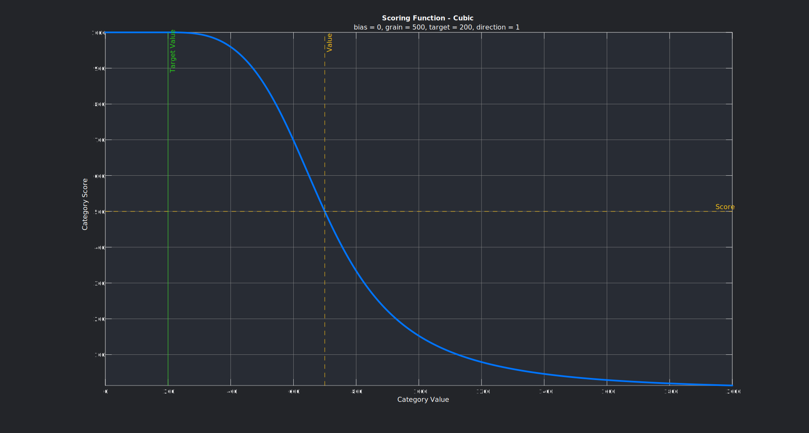

Demo 1 - Vanilla JavaScript
This Demo has the minimum amount of CSS and is written in 100% vanilla JS. The Modules written for "Web Components", "Vue", "React" or "Angular" my behave different in some cases. But overall the Framework of choice makes no difference, they have all the same end result...
| Category | Value | Target Value | Bias | Weighting | Score |
|---|
This is the config for this example
let config = {
category_count: 4,// number of category
category_names: ["Time", "Cost", "Efficiency", "Personell"],//category title to display
category_value_unit: ["s", "€", "%", "P"],// category unit to display
category_target_values: [10, 20, 100, 0],// target value to which a data Point in the data set should converge
category_target_value_step: [1, 0.01, 0.01, 1],//how big on step on the slider should be
category_direction: [1, 1, -1, 1],// 1: data point > target value; -1: data point < target value
category_grain: [1, 1, 1, 1],// fine tune to the acceptable difference between data point and target value ( IMPORTANT: g !== 0 always)!
category_evaluation: ["linear", "linear", "linear", "linear"], // how should the score of a category be calculated
category_weighting_preset: [25, 25, 25, 25], // presets
colors: ["#ff0000", "#ff7b00", "#ffbb00", "#00dfba", "#127efa", "#8921ff", "#d500e9"], // define the circle colors
};
Demo 2 - Web Component (Vanilla JavaScript)
In this example some imaginary Monitor is being scored. Using The Web Components Method is the easiest way to get this Scoring Calculator onto a Website
For using web components all that needs to be done is this:
<script src="DVSC.js" defer ></script>
<scoring-calc>
<scoring-calc-category/> number="0" rowName="Resolution" unit="px" value="1080" target="1440" step="1" direction="-1"
evaluation="linear" bias="2" weight="39.72519332681899" score="500" color="#FF1D15" grain="100">
</scoring-calc-category>
<scoring-calc-category number="1" rowName="Size" unit="in" value="24" target="27" step="0.5" direction="-1"
evaluation="linear" bias="-1" weight="16.693640030592356" score="500" color="#0075FF" grain="1">
</scoring-calc-category>
<scoring-calc-category number="2" rowName="Refresh Rate" unit="Hz" value="75" target="90" step="1" direction="-1"
evaluation="quad" bias="1" weight="13.247233998615995" score="500" color="#61E786" grain="5">
</scoring-calc-category>
<scoring-calc-category number="3" rowName="Color Accuracy" unit="%" value="96" target="99" step="0.1" direction="-1"
evaluation="linear" bias="0" weight="10.1807772250803" score="500" color="#FCC217" grain="1">
</scoring-calc-category>
<scoring-calc-category number="4" rowName="Cost" unit="$" value="105" target="90" step="0.01" direction="1"
evaluation="cube" bias="-2" weight="20.153155418892357" score="500" color="#34F6F2" grain="20">
</scoring-calc-category>
</scoring-calc>
everything is being handled via attributes applied on the scoring-calc-category html element. Even accessing any value via JavaScript is possible
let dvsc = document.querySelector("scoring-calc");
console.log(dvsc.elements);
// HTMLCollection(5) [scoring-calc-category, scoring-calc-category, scoring-calc-category, scoring-calc-category, scoring-calc-category]
console.log(dvsc.categoryCount); // 5
console.log(dvsc.categoryNumbers); //['0', '1', '2', '3', '4']
console.log(dvsc.categoryNames); //['Resolution', 'Size', 'Refresh Rate', 'Color Accuracy', 'Cost']
console.log(dvsc.categoryUnits); //['px', 'in', 'Hz', '%', '$']
console.log(dvsc.categoryValues); //['1080', '24', '75', '96', '105']
console.log(dvsc.categoryTargets); //['1440', '27', '90', '99', '90']
console.log(dvsc.categorySteps); //[['1', '0.5', '1', '0.1', '0.01']
console.log(dvsc.categoryDirections); //['-1', '-1', '-1', '-1', '1']
console.log(dvsc.categoryEvaluations); //['linear', 'linear', 'quad', 'linear', 'cube']
console.log(dvsc.categoryBiases); //['2', '-1', '1', '0', '-2']
console.log(dvsc.categoryWeights);
//['39.72519332681899', '16.693640030592352', '13.247233998615998', '10.1807772250803', '20.153155418892357']
console.log(dvsc.categoryColors); //['#FF1D15', '#0075FF', '#61E786', '#FCC217', '#34F6F2']
console.log(dvsc.categoryGrains); //['100', '1', '5', '1', '20']
Guide
To calculate a single category Score, the main principle is the
difference between the categoryTarget and the actual
categoryValue. Things to note are as follows:
-
The
categoryValuecan not be dynamically adjusted by the front end user, because it is a measured value in open world. -
The
categoryTargetis adjustable, with theminormaxvalue automatically being set to thecategoryValue. Should thecategoryValue >= categoryTargetthecategoryDirection = 1. E.g. the category goal is it to optimize the measured process for as little time as possible). If set correctly thecategoryTargetcannot be set bigger than thecategoryValue. The Result is the adjustablecategoryTargetwill automatically stop atmax = categoryValue. Now The other way around: Should thecategoryValue <= categoryTargetthecategoryDirection = -1. E.g. the category goal is it to optimize the measured process for the hightest efficiency possible. If set correctly thecategoryTargetcannot be set smaller than thecategoryValue. The Result is the adjustablecategoryTargetwill automatically stop atmin = categoryValue. -
The
categoryWeightcan be adjusted, which affects the overall score, but not thecategoryScore! When adjusting onecategoryWeightall the othercategoryWeightwill adjust accordingly, so:$$\sum_{i=1}^c categoryScore_i = 1 = 100\%$$
For ease of use the lowest individual
categoryWeightis 0.01 %. This ensures, that nocategoryWeightwill be stuck at 0%. Due to the nature of using linear Algebra (more specific Matrix calculations) for calculation the weights. Depending on the number of categories, if one category reaches 0% it will stay at 0% and the other weight will compensate, which is an unwanted effect -
The
categoryBiasis adjustable, with thecategoryBiasaccepting any value between bias ∈ [−5,5], bias ∈ Z. If0 < categoryBias < 5means, you favor the category and therefore giving it a better score. If thecategoryBias == 5thecategoryScore ≅ 1 ≅ 100%. If you set-5 < categoryBias < 0means, you disfavor the category and therefore giving it a worse score. If thecategoryBias == -5thecategoryScore ≅ 0 ≅ 0%. To control how the bias impacts thecategoryScorethere are three different option which must be chosen in theconfig. There are three evaluation methods:-
linear: s(v) returns a score with 0 >=
categoryScore<= 1000 , dependent on thecategoryTargett, the actualcategoryValuev ,categoryBiasb ,categoryDirectionp and thecategoryGraing , which should be set to relative resolution, which ís dependent on the use case, i.e. when running a marathon anything from 10 seconds to 10 minutes would be the grain, on the other hand when running a 100m dash the grain would be 0.5 Seconds to 0.005 Seconds.b ∈ [−5,5]; b ∈ Z; t ≤ v ∨ t ≥ v; p ∈ [−1,1]; p ∈ Z t, v, g ∈ R
h(v) = p(v−t)
In this example
categoryTarget(the blue line) is set to 200 andcategoryValue(the red line) is set to 700. BecausecategoryValue>categoryTargetourcategoryDirectionis +1.categoryBiasshall be 0 and thecategoryGrainis set to 500. By design if thecategoryValue == categoryGrain - categoryTargetthecategoryScoreshall always be 500(purple line)
-
quadratic

-
cubic

-